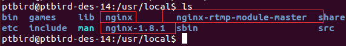
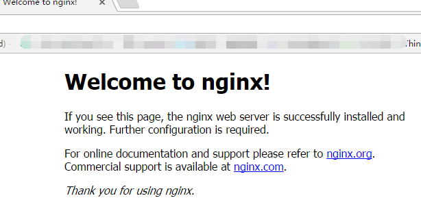
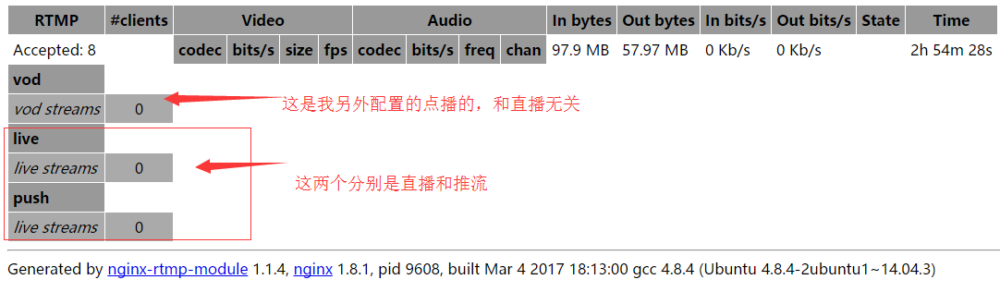
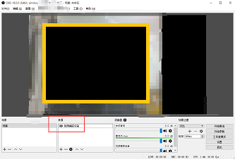
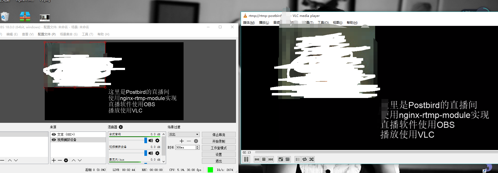

「自己开发直播」通过Nginx-rtmp-module搭建直播服务器并实现直播
帮别人做一个简单（非常非常简单）的直播平台（摆摆样子），涉及到了搭建RTMP流媒体服务器（虽然我觉得用SDK好的很多hhh）。
简单的了解了一下直播需要的关键的地方在于流媒体服务器，而构建流媒体服务器的方式有很多种，本着免费且方便的思想，最终选择了 nginx-rtmp-module
本文主要参照自：http://blog.csdn.net/kingroc/article/details/50839994
- 参照而非转载
- 因为每个人的环境什么的都不同，所以在搭建配置的过程中各种坑，我也会记录一下
- 非常感谢原作者的分享与撰写
不管怎么样，不建议使用windows搭建，nginx在windows上暴殄天物了。
文章后面会给出如何在windows下进行直播和观看直播，原作者未给出。
一、环境和工具
ubuntu 14.04 desktop
- 不用server的原因是一部分的演示用到了linux视频播放和直播软件，自己还要装桌面，麻烦。
- 不建议使用 最新的16TLS，我一开始就用它来做的，但是各种坑，因为很多包都被废弃或者必须降级
- ubuntu我装在vmware上，使用NAT静态ip（配置NAT静态ip可以参照这篇文章：http://www.linuxdiyf.com/linux/20707.html）
Nginx1.8.1
- 这个是我之前装的版本，版本没什么大的影响
- 我是源代码编译安装的，不建议用 apt-get install nginx
nginx-rtmp-module
直播肯定用大名鼎鼎的OBS
- OBS地址： https://obsproject.com/
观看目前只是用客户端观看，使用的是VLC media player
- 地址：https://www.videolan.org/vlc/
- 下载建议直接百度下载就行了，vlc官网些许慢
需要说明的是，在linux下直播和观看当然也没有任何的问题，而且上面提到的作者也介绍了如何在linux进行直播和观看直播。
建议阅读他的文章如下：（配置完在说...）
- 在linux上安装obs直播（需要ffmpeg）：http://blog.csdn.net/kingroc/article/details/50829213
- 在linux上使用OBS：http://blog.csdn.net/kingroc/article/details/50839994#t4
- 至于VLC怎么观看网络流视频这个很简单，搜索一下就可以。
二、安装Ngnix
下面所有的操作都是在root用户下进行的，因此没有sudo
1、安装各种依赖包
$ apt-get install openssl libssl-dev libpcre3 libpcre3-dev坑：安装 libpcre3-dev 包括其他几个依赖库会提示你安装失败，因为已经存在的库版本太高，需要进行降级处理，而使用 ubuntu 16.0 LTS降级的时候，不知道为什么把python等多个库都删除了，因此很多软件都挂了，无奈我只能放弃 Ubuntu 16.0
典型的错误提示如下：
下列软件包有未满足的依赖关系：
openssh-server : 依赖: openssh-client (= 1:6.6p1-2ubuntu1)
E: 无法修正错误，因为您要求某些软件包保持现状，就是它们破坏了软件包间的依赖关系。解决办法：至于什么是降级处理怎么降级处理可以具体参照百度，不过需要注意的是，在提示你是否Y/n的时候，一定要看看，要不要卸载软件，再输入Y确认，避免误操作！
如果是上面的需要降级，则如下操作即可进行降级：
注意是将后面括号的内容加到要安装库的后面，但是和 = 之间的空格要去掉
#降级处理
$ apt-get install openssh-client=1:6.6p1-2ubuntu12、编辑安装nginx与rtmp-module
nginx和nginx-rtmp-module是一起编译安装的。
我将下载下来的nginx和nginx-rtmp-moudle-master两个文件夹都放在了 /usr/local/下，（-master是因为我在github下载的，没有改名字）
如下图所示，而nginx是编译后安装好的nginx路径（编译安装使用的是默认配置，只是加上了rtmp-module,没有做其他的配置和改动）。

编译安装Nginx
#注意nginx-rtmp-module-master的路径
$ ./configure --add-module=../nginx-rtmp-module-master
$ make
$ make install经过上面的默认配置安装之后，nginx目录分别如下：
- nginx安装目录 /usr/local/nginx
- nginx配置目录 /usr/local/nginx/conf/nginx.conf
- nginx运行目录 /usr/local/nginx/sbin/nginx --options
测试nginx服务器
进入安装目录/usr/local/nginx，运行命令
$ ./sbin/nginx在浏览器输入linux能够访问nginx即可。

三、配置直播服务器
所有的配置都基于 nginx-rtmp-module 的官方文档
github地址如下： https://github.com/arut/nginx-rtmp-module#nginx-based-media-streaming-server
因为我们这里只考虑直播，因此点播就不在记录了。
关于视频点播服务器的配置可以查看上面作者的文章：[http://blog.csdn.net/kingroc/article/details/50839994] [9]
视频点播服务器和视频直播的不同我想不需要说明，一个实时推流（如果不了解什么是推流可以百度一下就OK），一个是也是播放视频流，但是是基于文件进行的。点播无非是通过播放某服务器上的文件进行推流，从而能够观看，而直播是有专门推流客户端进行实时推流。
我把我的nginx.conf的配置贴出来（只注明和直播有关的内容），改写的注释我都写了，该去掉的配置我也都去掉了，唯一需要注意的就是我监听的是一个域名，而不是ip，因为域名我是为了在局域网使用。
- 我的ubuntu IP是 192.168.124.129,hosts文件将rtmp-postbird指向了这个ip。
- 同时windows的hosts文件我也改过，同样将rtmp-postbird指向了192.168.124.129，这样子好处是，很轻松在windows上进行推流和观看
- rtmp上最重要的配置就是 push rtmp://rtmp-postbird/live;（详细查看下面注释）
#/usr/local/nginx/conf/nginx.conf
#注明：请勿直接覆盖原来的conf文件,这只是部分有关直播的内容
#配置RTMP，这个配置格式在github的readme上有详细说明
rtmp {
server {
listen 1935; #服务端口--默认
chunk_size 4096; #数据传输块的大小--默认
#设置直播的application名称是 live
application live{
live on; #live on表示开启直播模式
}
#设置推流的应用名称
application push{
live on; #开启直播
push rtmp://rtmp-postbird/live; #推流到上面的直播应用
}
}
}
#下面的server是在http的一级配置标签下的
#请在http里面找到server
#上面的注释对懂nginx的人是废话，但是如果你不熟悉nginx，建议认真看看
http{
...# 这里有一些其他的配置
server {
listen 80; #端口
server_name rtmp-postbird;#设置http服务器监听的域名 hosts中配置了
#下面两个是加上去的，用来配置直播的http访问
#具体的意思可以在github的文档中查看
location /stat {
rtmp_stat all;
rtmp_stat_stylesheet stat.xsl;
}
location /stat.xsl {
#注意这里的路径不能错误，直接写绝对路径就可以
root /usr/local/nginx-rtmp-module-master/;
}
location / {
root html;
index index.html index.htm;
}
error_page 500 502 503 504 /50x.html;
location = /50x.html {
root html;
}
}
}配置完之后，需要重新启动nginx
#为了清楚我就用了绝对地址
$ /usr/local/nginx/sbin/nginx -s reload然后在浏览器输入 http://rtmp-ostbird/stat ,stat就是上面server中配置的名称
如果能看到下面图片的内容，则证明配置没有问题，一般没啥问题，我是一次就成功的。如果无法访问，请关闭防火墙以及查看hosts文件等等。

四、进行直播
下面是在windows上进行直播，如果想在linux上直播，请返回到本篇文章第一个大标题下查看。
1、下载OBS并进行安装
这个...没啥好说的
2、使用OBS直播
关于OBS直播软件怎么使用网上很多都是与直播平台挂钩的。
这里只是简单说下，打开之后，在来源那里点击加号，选择一个来源，比如我选择了摄像头，如下图的马赛克的摄像头。

3、配置串流服务
- 点击【设置】
- 选择【串流】
- 串流类型选择【自定义流媒体服务器】
- URL填写我们上面配置的push地址【rtmp://rtmp-postbird/push】
- 密钥没有配置，不需要填写。
- 【完成】
- 【开始串流】
五、观看直播
直播使用VLC进行观看，其实很简单就是填一个链接就OK。
- 打开VLC media player，
- 选择【媒体】->【网络串流】
- 在地址输入：rtmp://rtmp-postbird/live（之前配置的live的地址）
- 确认后即可观看
六、确认能直播

七、问题
这个只是实现了推流然后能观看，依旧有很多问题。
- 在windows上直播观看延迟大约在5-10秒，如果非局域网这个速度没法看。
- 现在所有人只要填写推流地址，就能进行播放和查看，没有权限控制，虽然rtmp本身对ip有一个策略机制可以配置，但是并没有什么实际的用处，需要结合程序实现控制，也是后面需要实现的功能
- 目前还没有考虑网页上的观看，网页上考虑使用html5流媒体播放器，结合hls协议实现，也是后面回去研究一下。
文章版权：Postbird-There I am , in the world more exciting!
本文链接：http://www.ptbird.cn/nginx-rtmp-module-server.html
转载请注明文章原始出处 !
![]()
正解
建议直接用第3方的直播sdk，比如starRTC,声网之类，简单粗暴，让更多时间去干更有意义的事情。
只会调用sdk，什么底层的都不去接触，原理也不知道，就叫有意义了？
看到这，果断关注
请教下，既然直播平台这么好搭建，那么做直播的研发人员都做哪些活呢？还有就是这个靠什么赚钱，谢谢！
一个行业，技术只是实现手段，是否赚钱要看公司的政策、运行方式。【直播平台这么好搭建】这理解是错误的，你看到的只是最简单的实现，可能20个人看直播、100个人看直播没问题，一旦人数多了，就要涉及负载均衡、网络带宽、服务器压力、数据库压力等等，这个例子就像是开发一个类似淘宝的多商家商城网上很多开源项目，但是不能说这就是淘宝了。直播靠的无非是广告和礼物。
我不用摄像头直播,我有个hdmi编码器,从编码器输出内容直播该怎么操作？编码器hdmi输入端是我家机顶盒,输出端是网口。
只要能够推出 rtmp 的流就可以，我使用的 OBS 是一个能够通过摄像头采集转成 RTMP 视频流的，而 RTMP 服务器就是处理这些视频流。看你的设备能够推出什么视频流，然后去处理即可。 RTMP 只是其中一种
我不用摄像头直播,我有个hdmi编码器,从编码器输出内容直播该怎么操作？编码器hdmi输入端是我家机顶盒,输出端是网口。
手机上面可以看么？
手机上看取决于前端使用什么播放器插件，与服务端无关
666